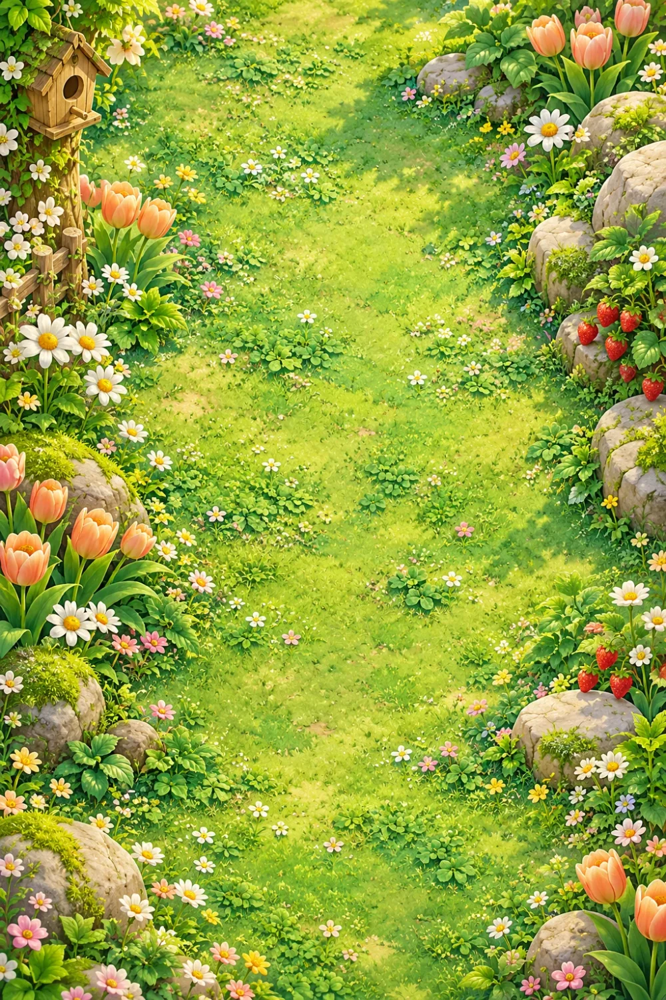
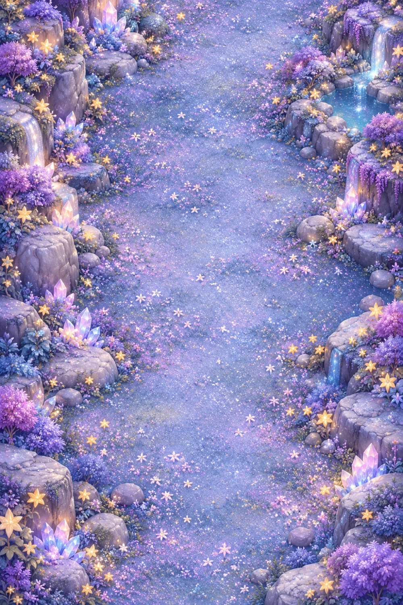
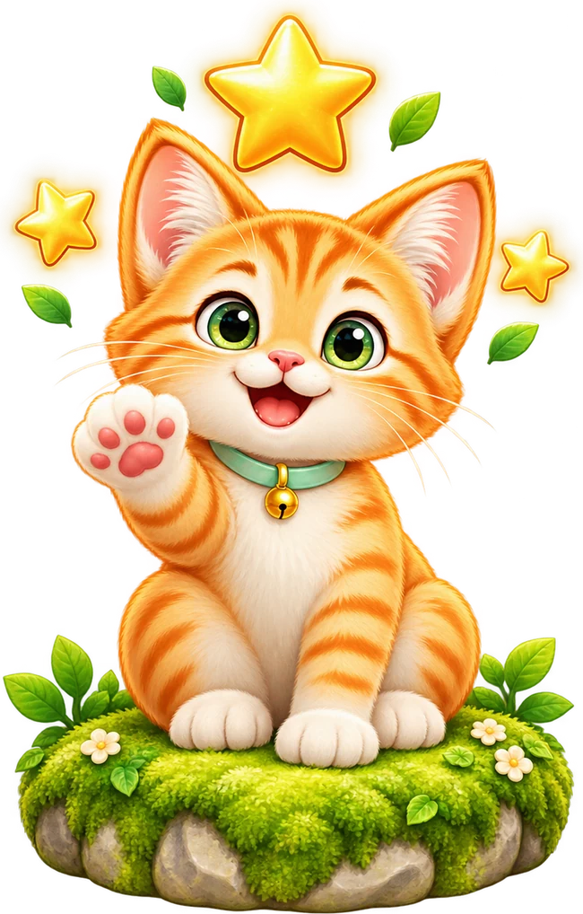
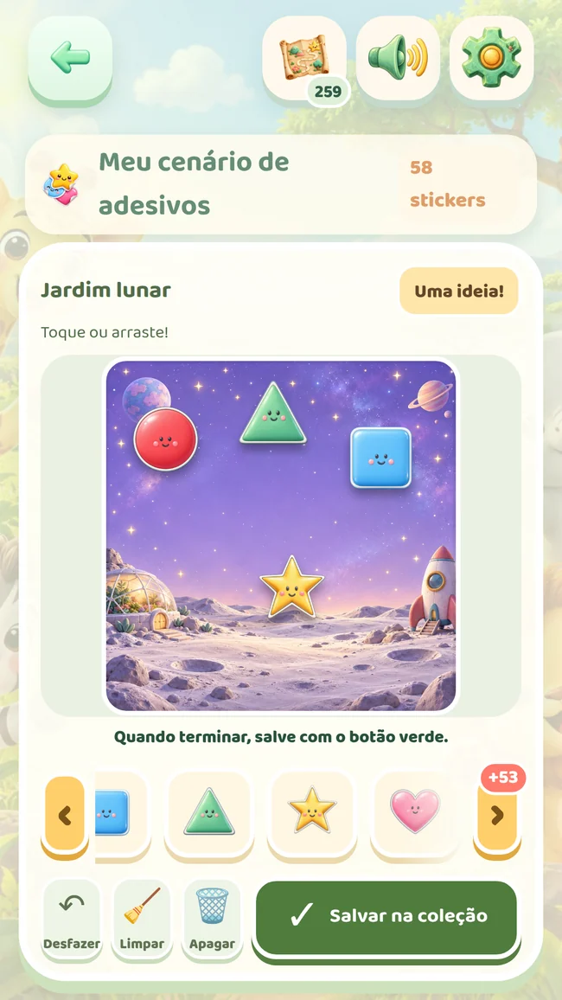
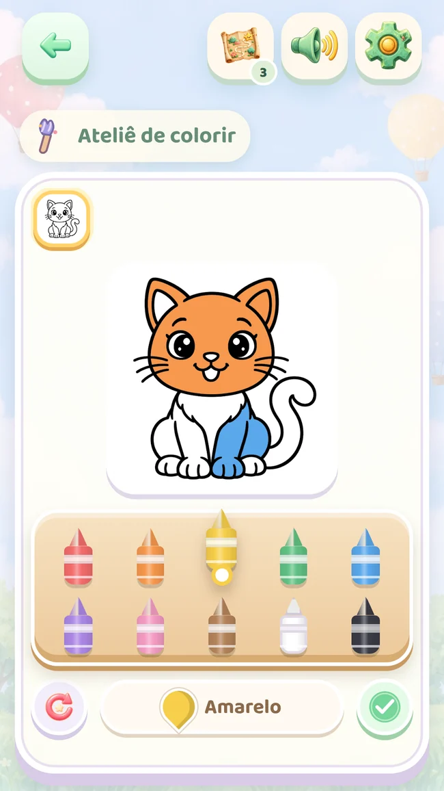
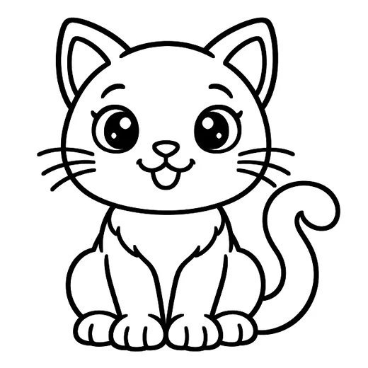
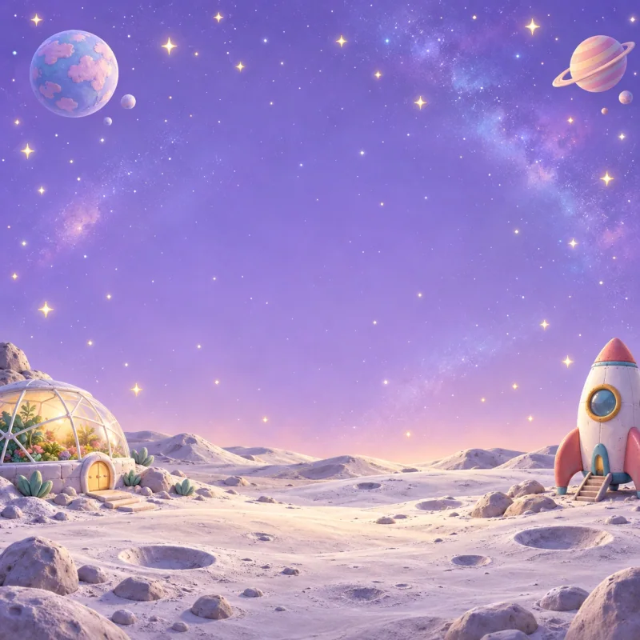
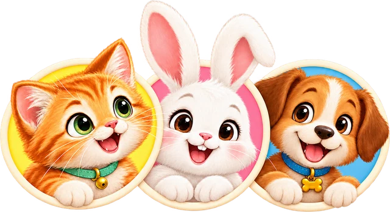
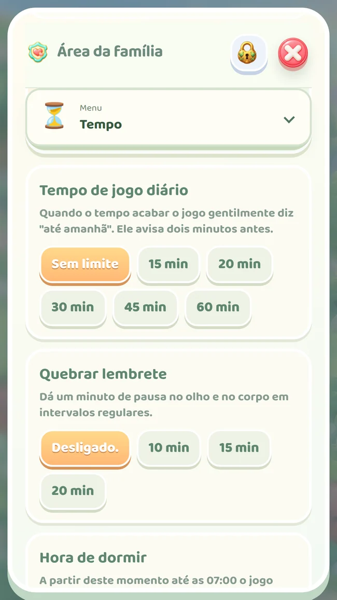

260 paradas, cinco mundos
De combinar figuras a labirintos, com mais opções e sequências maiores.
Versão completa · Lifetime
Mais brincadeiras favoritas, novos cenários e um mapa para cada irmão. Uma compra pelo Google Play dá acesso à coleção completa.
Um pagamento. Sem assinatura.
Área dos responsáveis → Versão completa. O Google Play mostra o preço atual.




As 260 paradas incluem as 50 gratuitas. Nas duas versões, são liberadas em ordem.

De combinar figuras a labirintos, com mais opções e sequências maiores.

Cores e imagens para pequenas mãos experimentarem.

Jardim da lua e vale dos dinossauros, com adesivos conquistados para suas histórias.

Mapas, progresso e criações separados no mesmo aparelho. Cada irmão continua do seu lugar.
| Conteúdo | Grátis | Versão completa |
|---|---|---|
| Paradas do mapa | 50 | 260 |
| Desenhos para colorir | 4 | 26 |
| Quebra-cabeças | 2 | 12 |
| Cenários criativos | 1 | 10 |
| Perfis no mesmo aparelho | 1 | Até 4 |
| Cinco idiomas e controles de tempo | Incluído | Incluído |
Coleção atual: 1.0.59. A versão completa inclui todo o conteúdo gratuito. As 260 paradas incluem as 50 gratuitas. Nas duas versões, são liberadas em ordem.

Juntos, no seu ritmo
Uma verificação de adulto protege a área dos responsáveis. Planeje o tempo, veja o que foi explorado e encontre ideias para compartilhar.
Tempo diário de jogo, lembretes de pausa e hora de dormir.
Atividades concluídas e tempo de jogo. Não é um teste de desenvolvimento ou capacidade.
Salve ou compartilhe criações e prepare folhas A4 para colorir e imprimir.
Figuras conhecidas, palavras novas
Escolham uma figura, ouçam seu nome e procurem o mesmo objeto em casa. Os cinco idiomas estão disponíveis nas duas versões.
As vozes em turco e inglês estão incluídas e funcionam offline. Espanhol, português do Brasil e indonésio usam a voz do aparelho; a disponibilidade e o uso offline dependem do pacote instalado.
Um pagamento. Sem assinatura.
Explore 50 paradas gratuitas e conheça o jogo em família.
Veja a coleção completa e o preço fornecido pelo Google Play.
O acesso é aberto quando o pagamento é concluído e a compra, verificada.
Sem assinatura ou renovação automática. Pagamentos pendentes não dão acesso. A compra pode ser restaurada; o progresso fica no aparelho.
Em teste fechado no momento. O acesso no Google Play depende da autorização da sua conta de teste.
Elas podem ser repetidas. Os desenhos e as medalhas conquistados ficam salvos. A coleção completa é aberta com uma compra opcional de pagamento único na área dos responsáveis.
No jogo, abra a área dos responsáveis e depois Versão completa. O Google Play mostra o preço e pede confirmação. Este site não recebe pagamentos. Não há assinatura.
Ela dá acesso à coleção completa, mas as paradas continuam sendo liberadas em ordem. A compra não pula o progresso.
O conteúdo do aplicativo Android funciona offline. Compras e restauração precisam de internet. As vozes offline dos outros três idiomas dependem do pacote do aparelho.
Restaure a compra na área dos responsáveis usando a mesma conta do Google Play. O progresso e as criações ficam no aparelho; restaurar a compra não os transfere automaticamente.
Não. São recompensas do jogo. O resumo mostra atividades concluídas e tempo de jogo; não dá notas ao desenvolvimento ou à capacidade da criança.